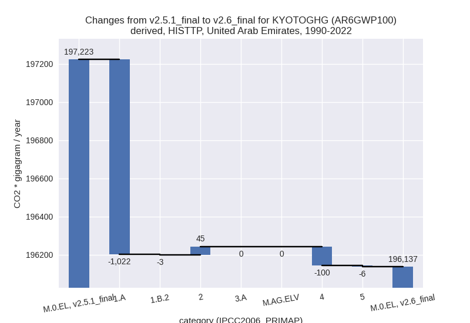

Changes in PRIMAP-hist v2.6_final compared to v2.5.1_final for United Arab Emirates
2024-09-24
Johannes Gütschow
Change analysis for United Arab Emirates for PRIMAP-hist v2.6_final compared to v2.5.1_final
Overview over emissions by sector and gas
The following figures show the aggregate national total emissions excluding LULUCF AR6GWP100 for the country reported priority scenario. The dotted linesshow the v2.5.1_final data.
The following figures show the aggregate national total emissions excluding LULUCF AR6GWP100 for the third party priority scenario. The dotted linesshow the v2.5.1_final data.
Overview over changes
In the country reported priority scenario we have the following changes for aggregate Kyoto GHG and national total emissions excluding LULUCF (M.0.EL):
- Emissions in 2022 have changed by -24.0%% (-76089.87 Gg CO2 / year)
- Emissions in 1990-2022 have changed by -7.5%% (-13813.72 Gg CO2 / year)
In the third party priority scenario we have the following changes for aggregate Kyoto GHG and national total emissions excluding LULUCF (M.0.EL):
- Emissions in 2022 have changed by -4.7%% (-16711.92 Gg CO2 / year)
- Emissions in 1990-2022 have changed by -0.6%% (-1085.74 Gg CO2 / year)
Most important changes per scenario and time frame
In the country reported priority scenario the following sector-gas combinations have the highest absolute impact on national total KyotoGHG (AR6GWP100) emissions in 2022 (top 5):
- 1: 1.A, CO2 with -39521.53 Gg CO2 / year (-18.5%)
- 2: 1.B.2, CH4 with -33924.92 Gg CO2 / year (-98.2%)
- 3: 4, CH4 with -3465.70 Gg CO2 / year (-21.1%)
- 4: 2, CO2 with -1946.41 Gg CO2 / year (-9.0%)
- 5: 4, N2O with 1128.85 Gg CO2 / year (398.3%)
In the country reported priority scenario the following sector-gas combinations have the highest absolute impact on national total KyotoGHG (AR6GWP100) emissions in 1990-2022 (top 5):
- 1: 1.B.2, CH4 with -9700.34 Gg CO2 / year (-39.0%)
- 2: 1.A, CO2 with -3783.83 Gg CO2 / year (-3.1%)
- 3: 4, CH4 with -433.27 Gg CO2 / year (-4.9%)
- 4: 2, CO2 with -288.63 Gg CO2 / year (-2.3%)
- 5: 4, N2O with 185.37 Gg CO2 / year (126.7%)
In the third party priority scenario the following sector-gas combinations have the highest absolute impact on national total KyotoGHG (AR6GWP100) emissions in 2022 (top 5):
- 1: 1.A, CO2 with -16215.34 Gg CO2 / year (-6.2%)
- 2: 4, CH4 with -897.59 Gg CO2 / year (-9.9%)
- 3: 2, HFCS (AR6GWP100) with 332.22 Gg CO2 / year (1.5%)
- 4: 4, N2O with -69.16 Gg CO2 / year (-32.5%)
- 5: 1.B.2, CO2 with 44.15 Gg CO2 / year (2.0%)
In the third party priority scenario the following sector-gas combinations have the highest absolute impact on national total KyotoGHG (AR6GWP100) emissions in 1990-2022 (top 5):
- 1: 1.A, CO2 with -1021.62 Gg CO2 / year (-0.7%)
- 2: 4, CH4 with -88.51 Gg CO2 / year (-1.9%)
- 3: 4, N2O with -11.26 Gg CO2 / year (-10.3%)
- 4: 2, HFCS (AR6GWP100) with 10.07 Gg CO2 / year (0.1%)
- 5: 5, N2O with -5.99 Gg CO2 / year (-1.1%)
Notes on data changes
Here we list notes explaining important emissions changes for the country. ’' means that the following text only applies to the TP time series, while means that it only applies to the CR scenario. Otherwise the note applies to both scenarios.
- We have included data from BUR1 adding country reported data for 2021 which changes recent emissions for the CR scenario for most sectors and gases. the most important changes are listed below:
- Energy CO2 is over 18% lower in 2022 and 35 lower cumulatively
- Fugitive CH4 emissions from oil and gas are down 98% in 2022 and almost 40% cumulatively because the 2021 data point is very low compared to older country reported data and EDGAR 8.0 data. BUR1 does not explain why emissions estimates are so low compared to older estimates.
- Emissions estimates for N2O from the waste sector also differ from previous reports. Waste CH4 is lower than in v2.5.1 but in line with older country reported emissions
Changes by sector and gas
For each scenario and time frame the changes are displayed for all individual sectors and all individual gases. In the sector plot we use aggregate Kyoto GHGs in AR6GWP100. In the gas plot we usenational total emissions without LULUCF. ## country reported scenario
2022
1990-2022
third party scenario
2022
1990-2022

Detailed changes for the scenarios:
country reported scenario (HISTCR):
Most important changes per time frame
For 2022 the following sector-gas combinations have the highest absolute impact on national total KyotoGHG (AR6GWP100) emissions in 2022 (top 5):
- 1: 1.A, CO2 with -39521.53 Gg CO2 / year (-18.5%)
- 2: 1.B.2, CH4 with -33924.92 Gg CO2 / year (-98.2%)
- 3: 4, CH4 with -3465.70 Gg CO2 / year (-21.1%)
- 4: 2, CO2 with -1946.41 Gg CO2 / year (-9.0%)
- 5: 4, N2O with 1128.85 Gg CO2 / year (398.3%)
For 1990-2022 the following sector-gas combinations have the highest absolute impact on national total KyotoGHG (AR6GWP100) emissions in 1990-2022 (top 5):
- 1: 1.B.2, CH4 with -9700.34 Gg CO2 / year (-39.0%)
- 2: 1.A, CO2 with -3783.83 Gg CO2 / year (-3.1%)
- 3: 4, CH4 with -433.27 Gg CO2 / year (-4.9%)
- 4: 2, CO2 with -288.63 Gg CO2 / year (-2.3%)
- 5: 4, N2O with 185.37 Gg CO2 / year (126.7%)
Changes in the main sectors for aggregate KyotoGHG (AR6GWP100) are
- 1: Total sectoral emissions in 2022 are 177833.56
Gg CO2 / year which is 73.9% of M.0.EL emissions. 2022 Emissions have
changed by -29.1% (-73125.75 Gg CO2
/ year). 1990-2022 Emissions have changed by -8.9% (-13450.91 Gg CO2 / year). For 2022
the changes per gas
are:
For 1990-2022 the changes per gas are:
The changes come from the following subsectors:- 1.A: Total sectoral emissions in 2022 are 174951.35
Gg CO2 / year which is 98.4% of category 1 emissions. 2022 Emissions
have changed by -18.3% (-39244.98 Gg
CO2 / year). 1990-2022 Emissions have changed by -3.0% (-3747.55 Gg CO2 / year). For 2022
the changes per gas
are:
For 1990-2022 the changes per gas are:
There is no subsector information available in PRIMAP-hist. - 1.B.2: Total sectoral emissions in 2022 are 2882.22
Gg CO2 / year which is 1.6% of category 1 emissions. 2022 Emissions have
changed by -92.2% (-33880.77 Gg CO2
/ year). 1990-2022 Emissions have changed by -36.1% (-9703.37 Gg CO2 / year). For 2022
the changes per gas
are:
For 1990-2022 the changes per gas are:
There is no subsector information available in PRIMAP-hist.
- 1.A: Total sectoral emissions in 2022 are 174951.35
Gg CO2 / year which is 98.4% of category 1 emissions. 2022 Emissions
have changed by -18.3% (-39244.98 Gg
CO2 / year). 1990-2022 Emissions have changed by -3.0% (-3747.55 Gg CO2 / year). For 2022
the changes per gas
are:
- 2: Total sectoral emissions in 2022 are 45284.32 Gg
CO2 / year which is 18.8% of M.0.EL emissions. 2022 Emissions have
changed by -3.3% (-1550.71 Gg CO2 /
year). 1990-2022 Emissions have changed by -1.1% (-243.97 Gg CO2 / year). For 2022
the changes per gas
are:
- M.AG: Total sectoral emissions in 2022 are 2253.37
Gg CO2 / year which is 0.9% of M.0.EL emissions. 2022 Emissions have
changed by 65.7% (893.10 Gg CO2 /
year). 1990-2022 Emissions have changed by 4.8% (135.06 Gg CO2 / year). For 2022 the
changes per gas
are:
For 1990-2022 the changes per gas are:
The changes come from the following subsectors:- 3.A: Total sectoral emissions in 2022 are 1814.78
Gg CO2 / year which is 80.5% of category M.AG emissions. 2022 Emissions
have changed by 44.2% (556.05 Gg CO2
/ year). 1990-2022 Emissions have changed by 4.9% (83.66 Gg CO2 / year). For 2022 the
changes per gas
are:
For 1990-2022 the changes per gas are:
There is no subsector information available in PRIMAP-hist. - M.AG.ELV: Total sectoral emissions in 2022 are
438.59 Gg CO2 / year which is 19.5% of category M.AG emissions. 2022
Emissions have changed by 331.9%
(337.05 Gg CO2 / year). 1990-2022 Emissions have changed by 4.7% (51.40 Gg CO2 / year). For 2022 the
changes per gas
are:
For 1990-2022 the changes per gas are:
There is no subsector information available in PRIMAP-hist.
- 3.A: Total sectoral emissions in 2022 are 1814.78
Gg CO2 / year which is 80.5% of category M.AG emissions. 2022 Emissions
have changed by 44.2% (556.05 Gg CO2
/ year). 1990-2022 Emissions have changed by 4.9% (83.66 Gg CO2 / year). For 2022 the
changes per gas
are:
- 4: Total sectoral emissions in 2022 are 14343.77 Gg
CO2 / year which is 6.0% of M.0.EL emissions. 2022 Emissions have
changed by -14.0% (-2336.85 Gg CO2 /
year). 1990-2022 Emissions have changed by -2.8% (-247.90 Gg CO2 / year). For 2022
the changes per gas
are:
For 1990-2022 the changes per gas are: - 5: Total sectoral emissions in 2022 are 892.16 Gg
CO2 / year which is 0.4% of M.0.EL emissions. 2022 Emissions have
changed by 3.5% (30.33 Gg CO2 /
year). 1990-2022 Emissions have changed by -1.1% (-5.99 Gg CO2 / year). For 2022 the
changes per gas
are:
third party scenario (HISTTP):
Most important changes per time frame
For 2022 the following sector-gas combinations have the highest absolute impact on national total KyotoGHG (AR6GWP100) emissions in 2022 (top 5):
- 1: 1.A, CO2 with -16215.34 Gg CO2 / year (-6.2%)
- 2: 4, CH4 with -897.59 Gg CO2 / year (-9.9%)
- 3: 2, HFCS (AR6GWP100) with 332.22 Gg CO2 / year (1.5%)
- 4: 4, N2O with -69.16 Gg CO2 / year (-32.5%)
- 5: 1.B.2, CO2 with 44.15 Gg CO2 / year (2.0%)
For 1990-2022 the following sector-gas combinations have the highest absolute impact on national total KyotoGHG (AR6GWP100) emissions in 1990-2022 (top 5):
- 1: 1.A, CO2 with -1021.62 Gg CO2 / year (-0.7%)
- 2: 4, CH4 with -88.51 Gg CO2 / year (-1.9%)
- 3: 4, N2O with -11.26 Gg CO2 / year (-10.3%)
- 4: 2, HFCS (AR6GWP100) with 10.07 Gg CO2 / year (0.1%)
- 5: 5, N2O with -5.99 Gg CO2 / year (-1.1%)
Changes in the main sectors for aggregate KyotoGHG (AR6GWP100) are
- 1: Total sectoral emissions in 2022 are 284948.23
Gg CO2 / year which is 84.0% of M.0.EL emissions. 2022 Emissions have
changed by -5.4% (-16171.20 Gg CO2 /
year). 1990-2022 Emissions have changed by -0.6% (-1024.65 Gg CO2 / year). For 2022
the changes per gas
are:
The changes come from the following subsectors:- 1.A: Total sectoral emissions in 2022 are 244028.87
Gg CO2 / year which is 85.6% of category 1 emissions. 2022 Emissions
have changed by -6.2% (-16215.34 Gg
CO2 / year). 1990-2022 Emissions have changed by -0.7% (-1021.62 Gg CO2 / year). For 2022
the changes per gas
are:
There is no subsector information available in PRIMAP-hist. - 1.B.2: Total sectoral emissions in 2022 are 40919.36 Gg CO2 / year which is 14.4% of category 1 emissions. 2022 Emissions have changed by 0.1% (44.15 Gg CO2 / year). 1990-2022 Emissions have changed by -0.0% (-3.03 Gg CO2 / year).
- 1.A: Total sectoral emissions in 2022 are 244028.87
Gg CO2 / year which is 85.6% of category 1 emissions. 2022 Emissions
have changed by -6.2% (-16215.34 Gg
CO2 / year). 1990-2022 Emissions have changed by -0.7% (-1021.62 Gg CO2 / year). For 2022
the changes per gas
are:
- 2: Total sectoral emissions in 2022 are 42716.73 Gg CO2 / year which is 12.6% of M.0.EL emissions. 2022 Emissions have changed by 0.9% (395.69 Gg CO2 / year). 1990-2022 Emissions have changed by 0.2% (44.66 Gg CO2 / year).
- M.AG: Total sectoral emissions in 2022 are 2223.71 Gg CO2 / year which is 0.7% of M.0.EL emissions. 2022 Emissions have changed by 0.0% (0.00 Gg CO2 / year). 1990-2022 Emissions have changed by 0.0% (0.00 Gg CO2 / year).
- 4: Total sectoral emissions in 2022 are 8329.69 Gg
CO2 / year which is 2.5% of M.0.EL emissions. 2022 Emissions have
changed by -10.4% (-966.75 Gg CO2 /
year). 1990-2022 Emissions have changed by -2.1% (-99.76 Gg CO2 / year). For 2022 the
changes per gas
are:
For 1990-2022 the changes per gas are: - 5: Total sectoral emissions in 2022 are 892.16 Gg
CO2 / year which is 0.3% of M.0.EL emissions. 2022 Emissions have
changed by 3.5% (30.33 Gg CO2 /
year). 1990-2022 Emissions have changed by -1.1% (-5.99 Gg CO2 / year). For 2022 the
changes per gas
are: